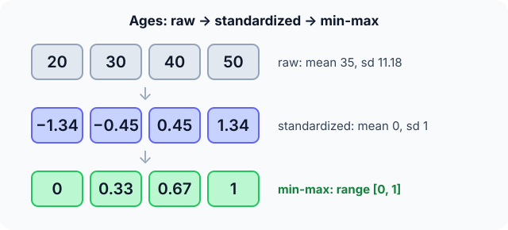

Prerequisites
- Mean and standard deviation.
- Numeric versus categorical features.
- Training versus test data.
The analogy
Everyday analogy
Think of a recipe that mixes "2 cups", "300 grams" and "a pinch". Before comparing quantities, a cook converts everything into the same unit.
Preprocessing converts features into comparable units, turns words into numbers, and fills in missing ingredients, so the model compares like with like.
How it works
Golden rule: learn every preprocessing parameter (means, standard deviations, categories) from the training data only, then apply the same parameters to validation and test data.
Start with one column by hand
Ages $[20, 30, 40, 50]$. Predict, then open "Check".
Example: predict before you read
Step 1. Compute the mean and the (population) standard deviation.
Check
Mean 35. Squared deviations 225, 25, 25, 225, average 125, so sd $= \sqrt{125} \approx 11.18$.
Step 2. Cover the next line and guess: the standardized values $z = (x - 35)/11.18$.
Check
$[-1.34, -0.45, 0.45, 1.34]$: mean 0, standard deviation 1.
Step 3. Min-max scaling: $(x - \min)/(\max - \min)$. Predict the result.
Check
$[0, 0.33, 0.67, 1]$: everything between 0 and 1.

Quick recall: Before reading further, cover the text above and say out loud: after standardization, what are the mean and standard deviation of a column?
Check your answer
Mean 0 and standard deviation 1.
Finish the picture: categories and gaps
Now handle a categorical column and a missing value.
- Colours red, green, blue, green. Predict the one-hot columns.
Check
Three columns (is_red, is_green, is_blue): rows [1, 0, 0], [0, 1, 0], [0, 0, 1], [0, 1, 0].
- Ages $[20, ?, 40, 50]$. Predict the mean imputation, and one risk.
Check
Fill with $(20 + 40 + 50)/3 \approx 36.7$. Risk: it shrinks the spread and hides that the value was missing; adding an "age_missing" flag column helps.
Quick recall: Without scrolling up, say out loud: why not encode red, green, blue as 1, 2, 3?
Check your answer
That invents an order and distances (blue would be "twice" green). One-hot encoding gives each colour its own column with no fake order.
Full worked calculation
The page's age column $[20, 30, 40, 50]$, preprocessed three ways, then a new test age of 60 run through the same steps. Last: what mean imputation does to the spread of $[20, ?, 40, 50]$.
| Age $x$ | $x - \mu$ | $(x - \mu)^2$ | Standardized $z$ | Min-max $x'$ |
|---|---|---|---|---|
| 20 | −15 | 225 | −1.342 | 0 |
| 30 | −5 | 25 | −0.447 | 0.333 |
| 40 | 5 | 25 | 0.447 | 0.667 |
| 50 | 15 | 225 | 1.342 | 1 |
| 60 (test) | 25 | 2.236 | 1.333 |
-
1Mean
$$\mu = \frac{20 + 30 + 40 + 50}{4} = 35$$The centre of the column. Subtracting it makes "average age" become 0.
-
2Standard deviation
$$\sigma = \sqrt{\frac{225 + 25 + 25 + 225}{4}} = \sqrt{125} = 11.18$$The typical distance from the mean. Dividing by it makes the unit "one standard deviation" instead of "one year", so ages and incomes become comparable.
-
3Standardize each value
$$z = \frac{x - 35}{11.18}: \quad 20 \mapsto -1.342, \quad 30 \mapsto -0.447, \quad 40 \mapsto 0.447, \quad 50 \mapsto 1.342$$The new column has mean 0 and standard deviation 1. Gradient descent, k-NN and SVMs all behave better when every feature is on this scale.
-
4Min-max scaling
$$x' = \frac{x - 20}{50 - 20}: \quad [0,\; 0.333,\; 0.667,\; 1]$$An alternative that squeezes the training values into $[0, 1]$. Useful for pixel values or when a bounded range matters.
-
5A test value, with training statistics
$$z_{60} = \frac{60 - 35}{11.18} = 2.236, \qquad x'_{60} = \frac{60 - 20}{30} = 1.333$$The test row uses $\mu$, $\sigma$, min and max from training, unchanged. Min-max output above 1 is normal for unseen data: the range is only guaranteed on the training set.
-
6One-hot encoding
$$\text{red} \mapsto [1, 0, 0], \quad \text{green} \mapsto [0, 1, 0], \quad \text{blue} \mapsto [0, 0, 1]$$Coding colours as 1, 2, 3 would tell the model "blue is three times red". Separate 0/1 columns carry no fake order.
-
7Mean imputation shrinks the spread
$$[20, ?, 40, 50]: \; \mu = 36.67, \;\; \sigma_{\text{observed}} = 12.47 \;\longrightarrow\; [20, 36.67, 40, 50]: \; \sigma = 10.80$$The filled value sits exactly on the mean, so it adds a row with zero deviation. The column now looks 13% less spread out than it really is. Adding an "age_missing" column keeps the information that a value was invented.
What the numbers tell us
Standardizing gave $[-1.34, -0.45, 0.45, 1.34]$ with mean 35 and sd 11.18 stored for later. A test age of 60 becomes $z = 2.24$ using those stored values.
Every preprocessing step is fitted on the training data and replayed unchanged on new data; imputing with the mean is simple but makes the data look less varied.
The rule in plain words
Scale numeric features (standardize, or min-max). Encode categories (one-hot for unordered, ordinal codes only for truly ordered ones). Impute missing values (mean, median or most frequent, plus a missing flag).
Fit all of these on the training data, store the parameters, and apply exactly the same transformation to every later dataset.
Quick recall: Before you read the code, describe the steps of standardizing a column, in your own words. Then check below.
Check your answer
Compute the mean, compute the standard deviation, replace each value by (value − mean) / sd, and keep the mean and sd to transform new data.
The code
Read this code after you have standardized the ages by hand. It will make more sense.
void standardize(double x[], int n, double stats[]) { /* z = (x - mean) / sd */
double mean = 0, variance = 0;
for (int i = 0; i < n; i++) mean += x[i] / n;
for (int i = 0; i < n; i++) variance += (x[i] - mean) * (x[i] - mean) / n;
double sd = sqrt(variance);
for (int i = 0; i < n; i++) x[i] = (x[i] - mean) / sd;
stats[0] = mean; stats[1] = sd; /* keep them to transform test data */
}Definition
What you just did, in one line: preprocessing transforms raw data into a model-ready form: scaling numeric features to comparable ranges, encoding categories as numbers, and imputing missing values.
flowchart TD
A{"What kind of column?"} -->|numeric| B{"Missing values?"}
B -->|yes| C["impute (median or mean) + missing flag"]
B -->|no| D["scale: standardize or min-max"]
C --> D
A -->|"categorical, no order"| E["one-hot encode"]
A -->|"categorical, ordered (S < M < L)"| F["ordinal codes 0, 1, 2"]
Putting numbers on it
Quick recall: Before looking at the formula, predict: a test age of 80 with the training mean and sd above. What is its z-score?
Check your answer
$(80 - 35)/11.18 \approx 4.0$: four standard deviations above the training mean.
The two common scalings, with our ages:
$$z = \frac{x - \mu}{\sigma} = \frac{20 - 35}{11.18} \approx -1.34, \qquad x' = \frac{x - \min}{\max - \min} = \frac{30 - 20}{50 - 20} \approx 0.33$$| Technique | Formula / rule | Use when |
|---|---|---|
| Standardization | $(x - \mu)/\sigma$ | Linear models, SVM, neural networks, PCA |
| Min-max scaling | $(x - \min)/(\max - \min)$ | Bounded inputs, e.g. pixel values |
| One-hot encoding | One 0/1 column per category | Unordered categories |
| Mean / median imputation | Fill with the training mean / median | A few missing numeric values |
| Log transform | $\log(1 + x)$ | Skewed values such as income |
Warning
Tree-based models (decision trees, random forests, gradient boosting) don't need scaling, but distance-based and gradient-based models do. Scaling is never harmful to correctness, but forgetting it can ruin KNN or SVM.
Exam tip
For any preprocessing step, say where its parameters come from: "fitted on training data, applied to test data". That single sentence prevents the most common exam (and real-world) mistake.
Common mistakes
- Computing the mean and sd on the full dataset before splitting (data leakage).
- Label-encoding unordered categories as 1, 2, 3, which invents an order.
- Min-max scaling with data containing extreme outliers, which squashes all normal values together.
Try it yourself
Exercise 1 (warm-up)
Min-max scale the incomes $[30, 45, 60, 90]$ (thousands).
Hint
min = 30, max = 90.
Answer
$[0, 0.25, 0.5, 1]$.
Exercise 2 (a bit harder)
Training ages $[20, 30, 40, 50]$ (mean 35, sd 11.18). A test person is 25. What z-score do they get, and why must you not recompute the mean including them? Write your answer down before you open it.
Show answer
$(25 - 35)/11.18 \approx -0.89$. Recomputing would let test data change the transformation, so the test score would no longer reflect truly unseen data: that's leakage.
Did you know?
Did you know?
Many data scientists say they spend most of their time on data cleaning and preparation rather than on modelling.
Neural networks apply the same idea inside the model: batch normalization standardizes each layer's inputs during training.
Key points to remember
If you remember one thing from each line, remember the because.
- Scaling matters because distance and gradient methods treat a big-number feature as more important.
- Standardization gives mean 0 and sd 1 because it subtracts the mean and divides by the sd.
- One-hot encoding avoids fake order because each category gets its own independent column.
- Parameters come from training data only because using test data would leak information.
- A missing flag helps because the fact that a value was missing can itself be informative.
Self-check questions
Answer these in order, out loud. They follow the page, so your answers become the script of your video.
- How is preprocessing like converting units in a recipe?
Sample answer
Before comparing "2 cups" and "300 grams" you convert to one unit; preprocessing puts features on comparable scales and turns words into numbers.
- Standardize the ages [20, 30, 40, 50].
Sample answer
Mean 35, sd about 11.18, so z ≈ [−1.34, −0.45, 0.45, 1.34].
- Why does
standardizestore the mean and sd instats?A good answer mentions test data.
Sample answer
The same mean and sd, learned from training data, must be reused to transform test data and new data in production.
- So what is preprocessing, in one sentence?
Sample answer
Transforming raw data into a model-ready form by scaling numbers, encoding categories and filling missing values.
- Why does KNN need scaling but a decision tree doesn't?
A good answer compares distances with splits.
Sample answer
KNN measures distances, so a feature with large numbers dominates. A tree splits one feature at a time on thresholds, which is unaffected by the feature's scale.
- What are the formulas for standardization and min-max scaling?
Sample answer
$(x - \mu)/\sigma$ and $(x - \min)/(\max - \min)$.
- How should a categorical colour column be encoded?
Sample answer
One-hot: one 0/1 column per colour, because the colours have no natural order.
- If you had to teach this to a friend in 2 minutes, what would you leave out, and why?
Sample answer
I'd leave out log transforms and missing flags. I'd keep the recipe-units analogy, the four-age standardization, one-hot colours, and "fit on training data, apply everywhere".
External resources
- scikit-learn: Preprocessing data: scalers, encoders and imputers with code.
- Google ML Crash Course: Normalization: scaling numerical data, visually.
- Wikipedia: Feature scaling: methods and motivation.
Videos
- YouTube search: feature scaling explained: standardization versus normalization.